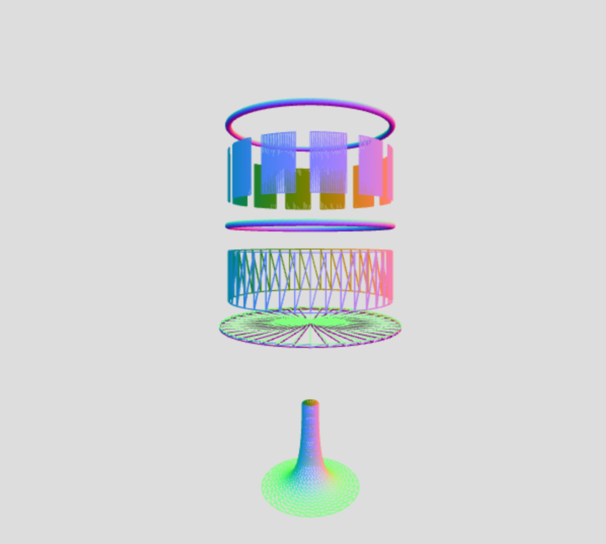
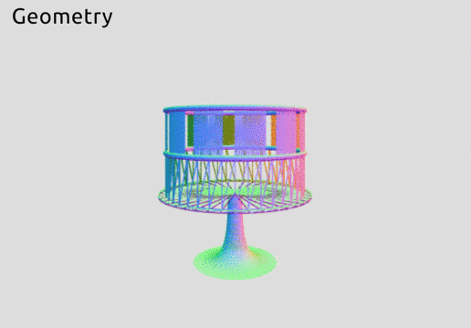
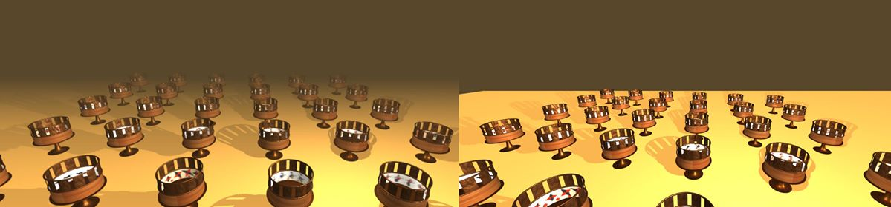

Interactive zoetropes

- We built an interactive scene that includes multiple zoetropes, each of which is generated with random size parameters and placed at a random location.
- The mouse hover over a zoetrope triggers the rotation of that zoetrope.
Inspiration
Our inspiration for this project was the zoetrope, which is a pre-film animation device that was spun to show a looped animation strip in motion. Similar to a flipbook, it shows a sequence of images in succession with adjustable speed. It was invented in the mid-1800's and a popular toy at the time. Nowadays it is much less known, overtaken by film and web animation, but it remains an important part of animation history and its tactile, interactive nature still fascinates artists and animation fans today.
Implementation of Zoetrope
Geometry
The geometry of our zoetrope is made up of multiple nested object frames. The more complicated parts (base and slit cylinder) were created in their own functions with adjustable size parameters.

- Main cylinder: Cylinder geometry with open ends. Later we created a second, slightly smaller cylinder on the inside to be able to map different textures to the outside and inside without interference.
- Rims: Toruses, and a flat cylinder for the bottom base.
- Slit Cylinder: A cylinder with evenly spaced slits around the edge. We implemented this by positioning and rotating multiple cylinder pieces in a nested coordinate frame. It has adjustable parameters for slit width and number of slits.
- Base: A lathe geometry of a Bezier curve.

Materials
We started off by using Phong materials (with ambient and directional light), and texture mapping the zoetrope strip to the inside of the cylinder. We had 3 different materials:
- a white Phong material for the inside of the cylinder, with the zoetrope strip texture mapped to it. This has only the backside visible.
- a brown Phong material for the outside of the cylinder. This had only the front side visible.
- a brown Phong material for the rims, slit cylinder, and base. This had both sides visible.
Since the brown color for materials (2) and (3) were meant to represent wood and copper respectively, we decided to texture map those materials as well.

Finally, to add more realism to our scene, we added bump maps to the wood and copper materials. We also changed to using MeshStandardMaterial, which extends the Phong lighting model to give more realism to metallic surfaces.

Animation
When viewing the image strip through the slits at the top of the zoetrope, it creates an illusion of animation as it rotates around its y-axis. In our implementation, each individual zoetrope is a 3D object with its own y-axis, so we updated the rotation parameters of each zoetrope by the angular rotation velocity at every call of updateState function. We experimented with the rotation speed and the width of slits at the top of the zoetrope to find the best parameters to create the illusion of animation.
Due to the fact that we are using texture mapping for an animated object, we spent a while optimizing the code structure to ensure that the performance of animation would not be slowed down because of the texture mapping. We noticed that loading the textures during each animation frame would slow down the animation, but had problems with the animation when we only loaded textures at initialization. After trial and error, we handled the animation separately depending on whether the textures are successfully loaded to the object or not. The animation only starts after all of the textures are mapped and all the zoetropes are loaded into the array containing the zoetropes.
User Interaction
In our scene, we have 42 zoetropes in total. Each zoetrope has various animation sequences mapped onto the inside of the cylinder, so the user can move around the scene and spin different zoetropes to experience different historical animation sequences. To implement the user interaction, we opted for using a raycaster to detect mouse hover on objects. When the user hovers over a zoetrope with his/her mouse, the index of that zoetrope will be stored and later be used for updating the rotation of the zoetrope in the animation loop.

Effects
To give our scene more realism, we added shadow for each zoetrope. A point light source is set above the plane to cast shadows, with the ground plane set to receive shadows. We also wanted to create a sense of there being endless zoetropes in our scene, so we added fog, which is a way of fading to a specific color based on the distance from the camera. In three.js, fog is a property of the scene, which can be set with a color and intensity. The images below show the effect with and without fog being set for our scene.
